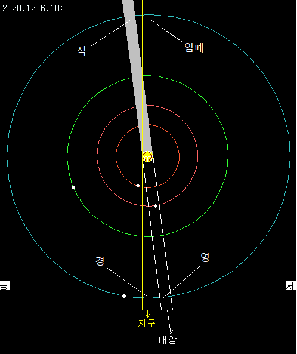

목성의 위성 윈도에서는 네 개의 갈릴레오 위성의 월별 움직임 및 위성의 입체적인 움직임을 보여준다. 갈릴레오 위성은 안쪽 궤도부터 이오, 유로파, 가니메데, 칼리스토이며 공전주기는 아래와 같다.
| 위성 | 이오 | 유로파 | 가니메데 | 칼리스토 |
| 공전주기 | 1.7691 | 3.5512 | 7.1546 | 16.6890 |
목성 위성의 4대 현상
목성의 위성은 목성 주위를 회전하므로 주기적으로 목성의 앞뒤를 지나거나 숨게 된다. 그 중 재미있는 것은 위성이 목성 표면의 앞으로 지나가는 것으로 이를 경이라한다. 목성 표면이 밝은데다 위성 또한 밝아 소형 망원경으로 보기에는 그리 쉽지 않다. 관측하기 유리할 때는 위성이 목성의 주변부에 겹쳐보일 때로 그 이유는 목성의 가장자리가 중앙부에 비해 미세하나마 어둡기 때문이다.
더욱 흥미를 끄는 현상은 목성 위성의 그림자가 목성 본체에 드리워지는 현상이다. 이를 영이라 하며 지구에서의 일식에 해당하는 현상이다. 영 현상이 일어나면 목성의 밝은 표면에 검은 반점이 하나 보이며 이 반점은 위성이 공전함에 따라 목성 표면을 이동한다. 위성의 그림자가 움직이는 속도가 목성 표면 무늬들이 자전에 의해 움직이는 속도와 비슷한 것도 있고 느린 것도 있어 흥미롭다.
때로는 목성의 대적반과 영 현상이 동시에 일어나기도 한다. 이것은 아주 드문 현상은 아니지만 누구에게나 흥미를 유발할 만할 일이다.
|  |
경, 영 현상이외에 위성이 목성 본체 뒤로 숨는 것을 엄폐, 목성의 그림자 뒤로 숨는 것을 식이라한다. (천문 소식 통권 11호 참조)
KST 2020년 12월 6일 18시의 갈릴레오 위성의 위치를 보자. 이 그림을 보고 다음의 현상들이 순서대로 일어날 것을 예측할 수 있다.
- 유로파는 경을 끝내고, 아직 영 상태이다
- 이오가 경을 시작하고 곧 이어 영 현상이 시작된다.
- 칼리스토가 경 현상을 시작한다. (새벽 3시쯤), 아쉽게도 칼리스토의 영현상은 다음날 아침 10시쯤 시작되며 우리는 관측할 수 없다.
화면 구성
목성의 위성 윈도는 모두 세 개의 작은 윈도로 구성되어 있다. 맨 왼쪽 윈도는 목성의 월별 움직임을 보여주고, 오른쪽 윈도는 임의 시간의 갈릴레오 위성의 모양을 입체적으로 보여주고, 가운데 윈도는 양 옆 윈도의 시간 설정, 시뮬레이션을 조절하며 목성의 고도를 나타내어 목성이 관측 가능한지를 보여준다.

|
|
좌측부터 월별 성도 윈도, 컨트롤 윈도, 시뮬레이션 윈도이다. * Tip: 시뮬레이션 윈도의 너비를 적당히 줄여서 봐야 한다. |
월별 성도 윈도
윈도의 맨 위에는 년월과 함께 방위가 표시되고, 가운데 두 줄은 목성 본체를 나타낸다. 네 개의 곡선은 각각 이오, 유로파, 가니메데, 칼리스토의 위치를 나타낸다. 옆으로 그어진 선은 KST를 기준으로한 날짜이다. 맨 위의 선은 1일 0시를 나타내고 다음 선은 2일 0시를 나타낸다.
월별 성도의 년/월은 가운데 컨트롤 윈도의 월별 성도 그룹 박스에서 할 수 있다. 보고자 하는 년/월을 선택하고 '성도 그리기' 버튼을 클릭한다.
컨트롤 윈도
컨트롤 윈도에서는 월별 성도와 시뮬레이션 윈도의 시간 및 선택 사항을 조절한다. 월별 성도와 시뮬레이션의 두 개의 그룹 박스로 되어 있다.
월별 성도 그룹 박스에서는 월별 성도의 년/월을 지정할 수 있고, 월별 성도의 하루의 길이를 픽셀 단위로 지정할 수 있다. 년/월 또는 하루의 길이를 변경한 다음에는 반드시 성도 그리기 버튼을 클릭해야한다.
시뮬레이션 그룹 박스의 각 항목은 다음과 같은 기능을 한다.
- 시간 설정: 시뮬레이션 윈도의 시간을 해당일의 KST 기준 0시로 맞춘다.
- 스텝: 시뮬레이션의 시간 간격을 정해준다. '시간' 단위를 기준으로 하며 소수로도 표현할 수 있다. 10 분은 0.167 시간이다.
- 스텝+: 시뮬레이션 윈도의 시간을 정해진 스텝만큼 더해준다. Ctrl 키를 누른 상태에서 '스텝+' 버튼을 누르면 정해진 스텝의 1/10을 더해준다.
- 스텝-: 시뮬레이션 윈도의 시간을 정해진 스텝만큼 빼준다. Ctrl 키를 누른 상태에서 '스텝-' 버튼을 누르면 정해진 스텝의 1/10을 빼준다.
- 앞으로: 시간이 전진하는 방향으로 시뮬레이션을 시작한다. 스텝의 크기를 조절함으로서 시뮬레이션의 속도를 조절할 수 있다. 앞으로 버튼을 한 번 누르면 앞으로 버튼은 정지 버튼으로 바뀌고 정지 버튼이 눌리거나, 뒤로 버튼이 눌릴때까지 전진 방향의 시뮬레이션은 계속된다.
- 뒤로: 시간이 후퇴하는 방향으로 시뮬레이션을 시작한다. 스텝의 크기를 조절함으로서 시뮬레이션의 속도를 조절할 수 있다. 뒤로 버튼을 한 번 누르면 뒤로 버튼은 정지 버튼으로 바뀌고 정지 버튼이 눌리거나, 앞으로 버튼이 눌릴때까지 전진 방향의 시뮬레이션은 계속된다.
- KST, UT: 시뮬레이션 윈도의 시간을 나타내다.
- 관측지: 관측지는 별바라기를 시작할 때 설정된 정보를 읽어 옵니다. 따라서, 관측지를 바꾸려면 지평좌표계 윈도에서 관측지를 변경 한 후, 별바라기를 종료했다가 다시 실행하면 됩니다.
- 고도: 주어진 시간과 관측지에서의 목성의 고도를 나타낸다. 고도를 보면 목성이 주어진 시간에 관측 가능한지 판단할 수 있다.
시뮬레이션 윈도
시뮬레이션 윈도에서는 목성 위성의 움직임을 보여준다. 윈도의 위쪽에는 목성의 북극 위에서 바라본 위성의 위치 및 궤도를 보여주고, 윈도의 아래쪽에는 지구에서 바라보는 위성의 움직임을 보여준다. 위쪽 그림에는 태양 빛에 의해 생기는 목성의 그림자 및 태양의 방향을 표시하여 영 또는 경 현상을 예측할 수 있다.
별바라기 홈 최종 변경: 2020년 05월 31일